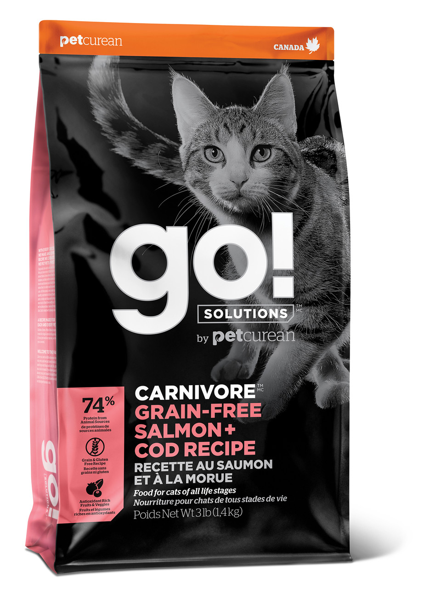
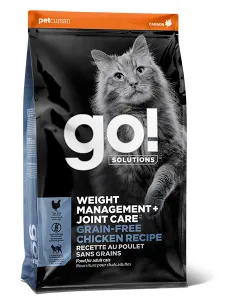

Just a little reminder
We know that each and every cat is different, that's why we've created a range of nutritious cat food with something for every kitty, no matter their age or requirements. Discover our delicious cat food range today!
We know that each and every cat is different, that's why we've created a range of nutritious cat food with something for every kitty, no matter their age or requirements. Discover our delicious cat food range today!
FELIX Naturally Delicious treat recipes are made with high quality ingredients and without any artifical colours. These wholesome treats with quality chicken as the number one ingredient and with a touch of catnip, are a great opportunity to share a wonderful moment together! Watch out for your cat's enthusiasm and sparkling eyes whilst enjoying these tasty and nutritious treats, naturally!
| Flavor | dry/wet |
|---|---|
| Chicken | dry |
| Beef | wet |
See More Pictures


She loves to take some good naps on her most favorite spots.